0. Before You Start
Use this section to confirm the test environment is the local pseudo/testing MVP.
C:\dev\DemoThemisMVP\web in cohort mode,
then open http://localhost:3000. If a tester only has this HTML open, ask the developer
running the session to start the local server.
- The app opens at
http://localhost:3000. - The UI mentions the simulated Sepolia cohort or local QA where appropriate.
- No tester is asked to install World App or verify World ID for this local pass.
1. Reviewer Landing Page
Goal: verify the first screen explains what DemoThemis is and gives a clear path into the demo.
/
- Open
http://localhost:3000/. - Read the headline and first paragraph. Confirm the product is understandable in under one minute.
- Click Watch attack demo to enter the sandbox.
- Return and click Open court to reach the cohort case list.
- Do not click Open in World App during local QA.
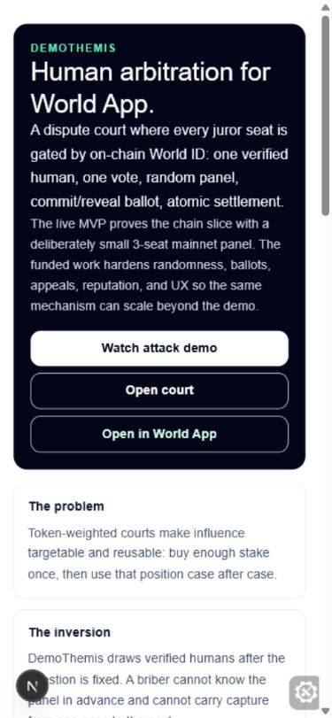
2. Sandbox Attack Demo
Goal: verify the pure-browser simulation is responsive and explains why token-weighted courts are easier to buy.
/sandbox
- Open
http://localhost:3000/sandbox. - Scroll to the comparative attack controls.
- Drag Attacker budget and confirm both columns update.
- Change Human pool width and watch the green curve shift.
- Click Draw a panel several times. The human court should sometimes redraw the random panel, not freeze.
- Continue down the page and test the core court, ladder, reputation, reward-pool, watchers, and case-browser widgets.
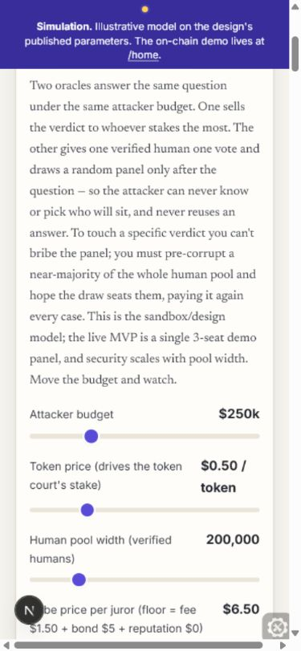
3. Cohort Court Home and Case Detail
Goal: verify testers can inspect pseudo cohort data and resolved case UX without wallet access.
/home
- Open
http://localhost:3000/home. - Confirm the banner says this is the simulated scale demo.
- Check the stats cards for simulated jurors, bonds held, and reward pool.
- Click Become a juror to test onboarding entry.
- Open a case card, for example
/case/111.
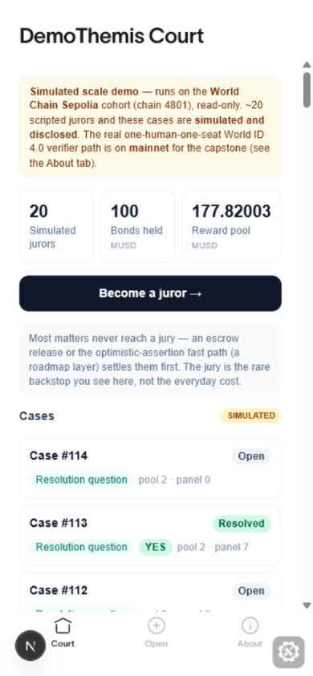
/case/111
- Open a resolved case from the list.
- Confirm phase and case-type badges are legible.
- Confirm the case content and hash-check copy are visible.
- Check the verdict/result panel: it should explain unique humans, one vote each, and the 70/20/10 fee split.
- Scroll to the panel addresses and explorer links.
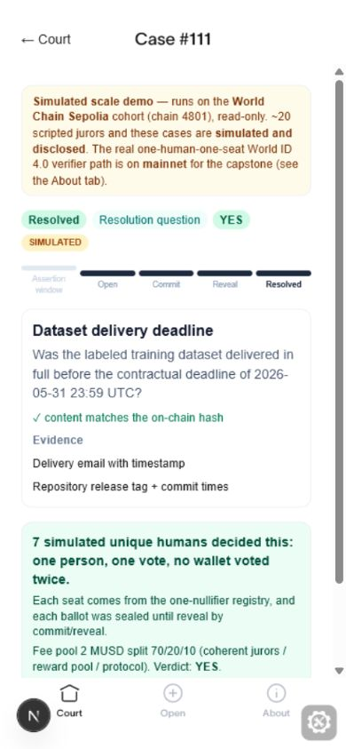
4. Juror UX Without World ID
Goal: test the juror journey locally from onboarding through commit, reveal, missing salt, and resolved result.
/onboard
- Open
http://localhost:3000/onboard. - Review the three onboarding steps and sybil-rejection evidence panel.
- Scroll to the amber local-mode notice.
- Click Test juror UX locally.
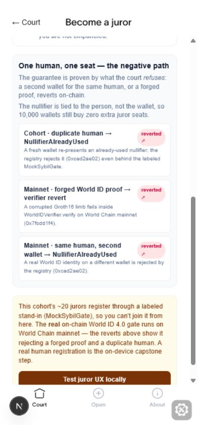
/juror-preview
- Open
http://localhost:3000/juror-preview. - Confirm the yellow notice says local QA only and no chain state changes.
- Click Start local join preview.
- Confirm the page advances to Verified human #21 and then the commit screen.
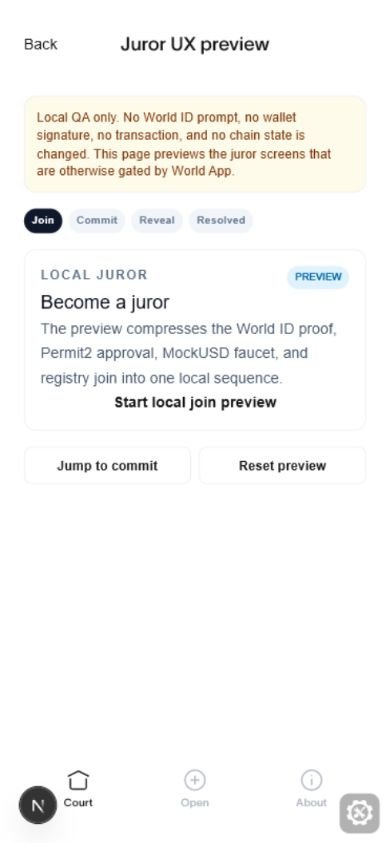
Commit State
- Choose YES or NO.
- Confirm the commitment hash and saved salt preview are shown.
- Click Commit vote locally.
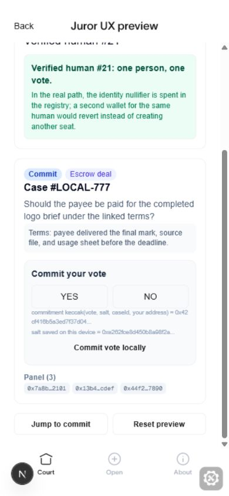
Reveal State
- Confirm the page remembers the committed vote.
- Click Reveal vote locally to finish the happy path.
- For an error-state check, click Preview missing-salt state instead.
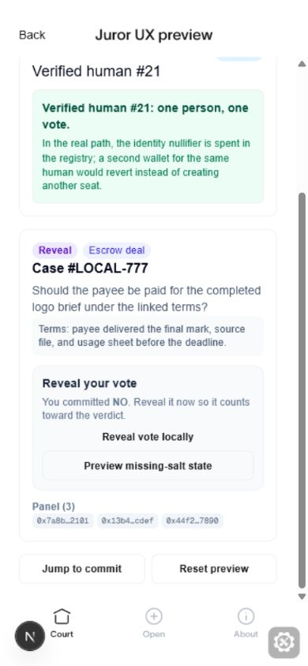
Missing Salt State
- Click Preview missing-salt state.
- Confirm the reveal button disables or the page clearly explains why reveal cannot proceed.
- Click Reset preview to recover.
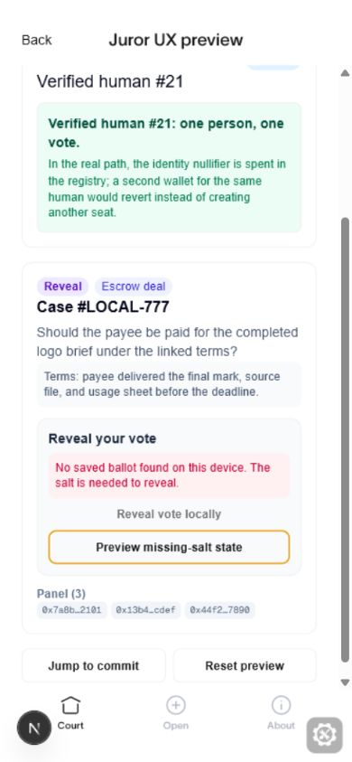
Resolved State
- Use Reset preview, then Jump to commit if you want to retest quickly.
- Commit and reveal a vote.
- Confirm the resolved case shows a verdict, panel, one-person-one-vote copy, and fee split.
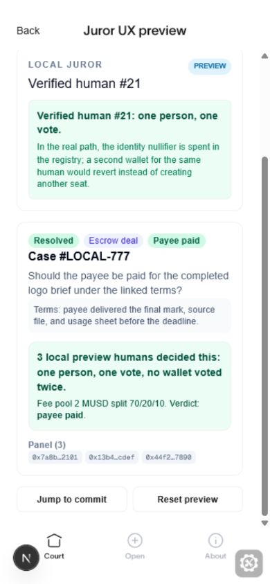
5. Dispute Opener
Goal: verify the opener UX explains escrow versus yes/no resolution while staying read-only locally.
/dispute
- Open
http://localhost:3000/dispute. - Toggle Escrow deal and Resolution question.
- Confirm disabled inputs look intentionally disabled, not broken.
- Click Test juror UX locally from the preview note if you need the juror flow.
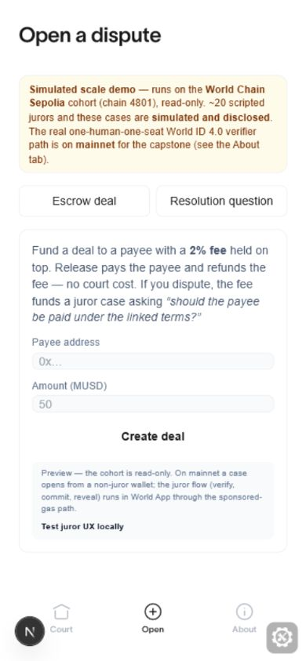
6. About and Scope Notes
Goal: verify testers can understand what is simulated, what is on-chain, and what remains capstone-only.
/about
- Open
http://localhost:3000/about. - Read the main paragraph and confirm the 3-seat demo caveat is clear.
- Click the sandbox link if returning to the attack demo.
- Check that explorer links are available but understand they leave the local app.
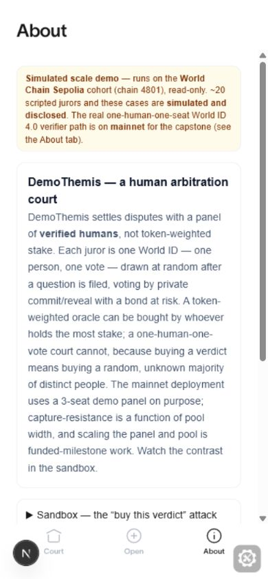
7. What Testers Should Report
Use this checklist for feedback after completing the flows above.
- Could you explain DemoThemis in one sentence after the landing page?
- Did every local-mode warning feel honest rather than scary or broken?
- Did the sandbox sliders and buttons respond quickly?
- Could you find the case list and open a resolved case?
- Did the juror preview make verify, bond, commit, reveal, and resolved states understandable?
- Was the missing-salt state clear enough to know what went wrong?
- Did any disabled button look like a bug rather than intentional local read-only behavior?
- Were any labels, routes, or screenshots out of date?
Generated for local user testing. Screenshots live in docs/local-testing-tutorial-assets/.